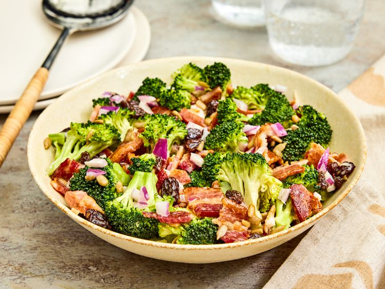

Easy Broccoli Bacon Salad

This broccoli bacon salad with crunchy red onions and juicy raisins tossed in a creamy dressing is simple and delicious. Anybody who doesn't like broccoli will change their mind upon taking their first bite!
Ingredients
- 12 slices cooked bacon, crumbled
- 1 large head broccoli, cut into florets
- 1 cup raisins
- 1 small red onion, chopped
- 1/4 cup sunflower seeds
Dressing:
- 1/2 cup mayonnaise
- 1/3 cup white sugar to taste
- 3 tablespoons red wine vinegar
Steps
- Gather all ingredients.
- Combine bacon, broccoli, raisins, onion, and sunflower seeds in a large bowl.
- To make the dressing: Whick mayonnaise, sugar, and red wine vinegar together in a small bowl until dressing is smooth.
- Pour over broccoli mixture and stir to coat.
Home